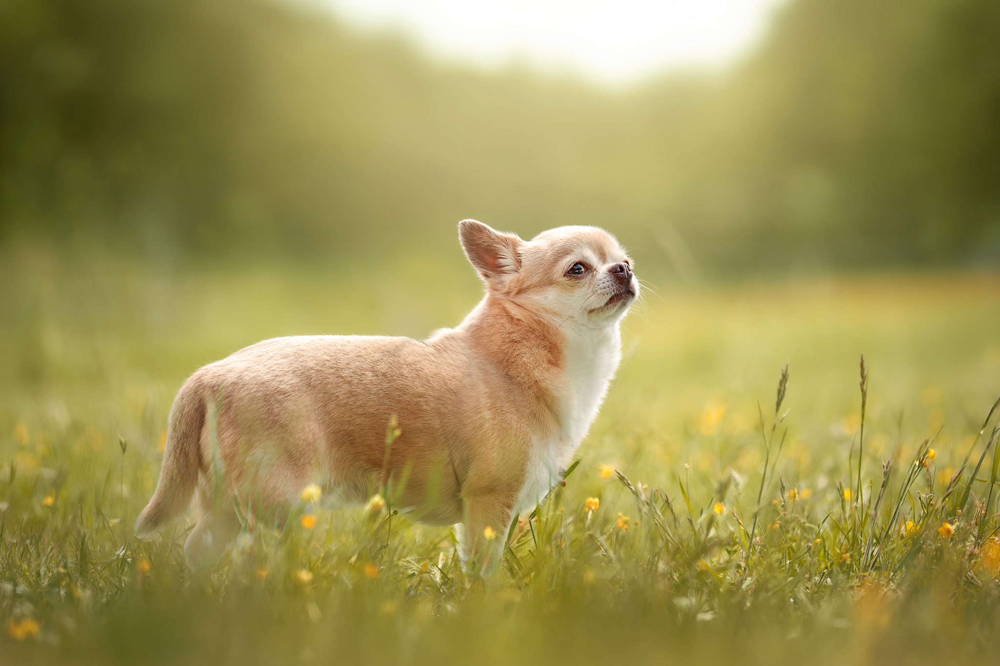

LA FORMULE
LA DÉCOUVERTE
80 €
Une première parenthèse pour immortaliser votre compagnon.
Une séance courte et idéale pour faire connaissance avec l'univers de la photographie animalière, ou simplement conserver quelques portraits précieux de votre animal.
- 30 minutes de séance
- 3 photos artistiquement retouchées
- Galerie privée en ligne
- Déplacement inclus dans un rayon de 30 km autour de Nérondes